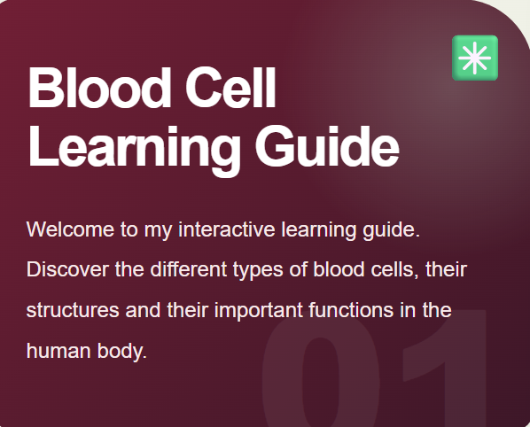
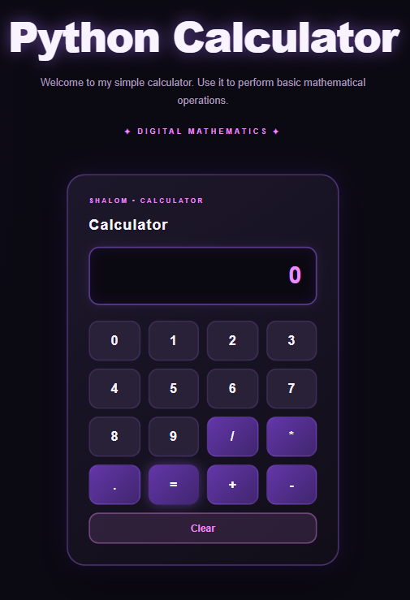
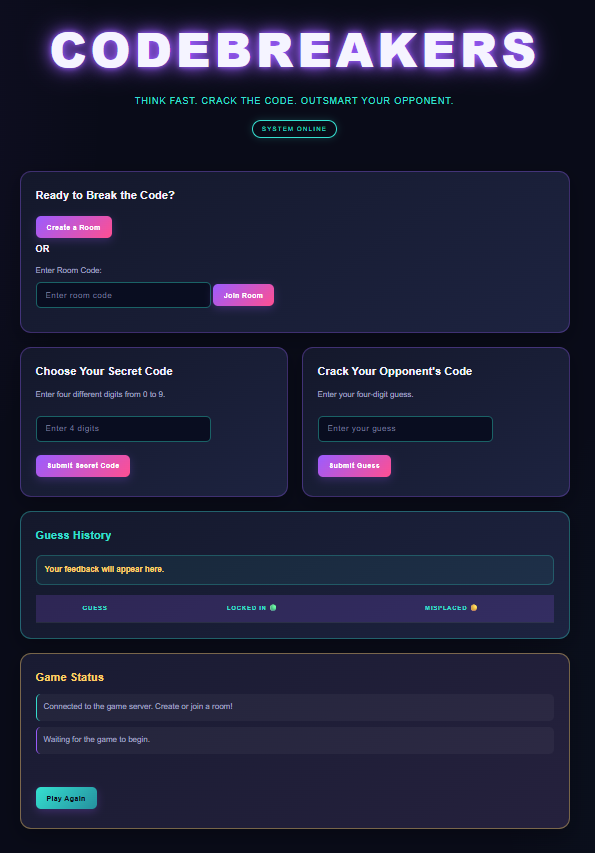

1. Blood Cell Learning Guide

This is an educational project designed to introduce the different types of blood cells, their structures and their functions in the human body.
Explore this interactive educational guide to learn about red blood cells, white blood cells and platelets, including their structures and functions.
2. Python Calculator

An interactive calculator developed using Python and a web interface. It performs basic mathematical operations, including addition, subtraction, multiplication and division.
Project area: Programming and Mathematics
3. CODEBREAKERS

A two-player online number guessing game. Players create or join a room, choose secret four-digit codes and take turns trying to crack their opponent's code.
Project area: Programming and Game Development